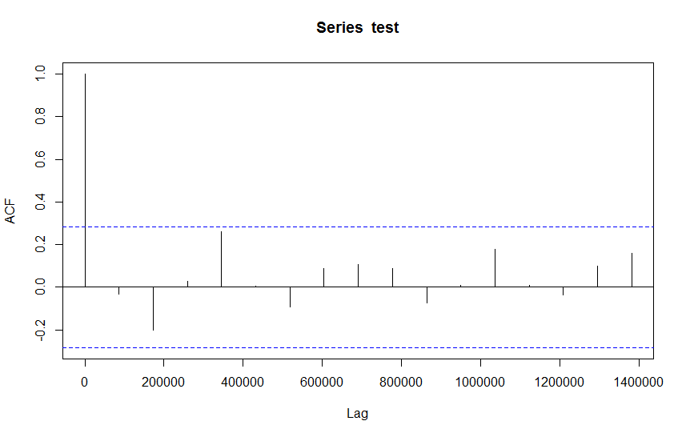

A random process (a - temporal - serie of random variables) is said to be a white noise process or white random process if its observations have a probability distribution with zero mean and finite variance, and are statistically independent.
A process \(\varepsilon_t\) is a weak white noise if:
\(\varepsilon_t\) is a weak white noise if it is a serie of uncorrelated random variables with mean 0 and finite variance.
See:
A process \(\varepsilon_t\) is a strong white noise if:
\(\varepsilon_t\) is a strong white noise if it is a serie of independant random variables with mean 0 and finite variance.
A process \(\varepsilon_t\) is a gaussian white noise if:
\(\varepsilon_t\) is a gaussian white noise if it is a strong white noise following a gaussian distribution.
A stationary process is a process that does not depend on time.
A process \(X_t\) is a weak (or second order) stationary process if:
Hence a process \(X_t\) is a weak (or second order) stationary process if it has a constant expected value (no trend), a constant finite variance and a constant auto-correlation (or equivalently a constant auto-covariance) for a given horizon \(h\).
It is also called second order stationary because the definition only check the two first moments of the random process.
It is the commonly used definition of stationary process.
A process \(X_t\) is a strong stationary process if, for all function \(f\):
\[f(X_1, X_2, ..., X_t) =^L f(X_{1+h}, X_{2+h}, ..., X_{t+h})\]Hence \(X_t\) is a strong stationary process if \(f(X_1, X_2, ..., X_t)\) and \(f(X_{1+h}, X_{2+h}, ..., X_{t+h})\) have the same distribution.
Let \(X_t\) be a stationary process with mean \(\mu\) and variance \(\sigma^2\). The autocorrelation between \(X_t\) and \(X_{t+h}\) does not depend on \(t\) and is:
\[\begin{eqnarray} \rho_h &&= \rho[X_t, X_{t+h}] &&= Corr[X_t, X_{t+h}] &&= \frac{Cov[X_t, X_{t+h}]}{\sigma^2} &&= \frac{\mathbb{E}[(X_t - \mu) (X_{t+h} - \mu)]} {\sigma^2} \end{eqnarray}\]See:
Let \(X_t\) be a stationary process with mean \(\mu\) and variance \(\sigma^2\). The partial autocorrelation between \(X_t\) and \(X_{t+h}\) does not depend on \(t\) and is:
\[\begin{eqnarray} r_h &&= r[X_t, X_{t+h}] &&=r_{X_{t+1},...,X_{t+h-1}}[X_t, X_{t+h}] &&= Corr[X_t - P_{X_{t+1},...,X_{t+h-1}}(X_t), X_{t+h} - P_{X_{t+1},...,X_{t+h-1}}(X_{t+h})] \end{eqnarray}\]Where:
The partial autocorrelation of \(X_t\) and \(X_{t+h}\) defines the dependency between \(X_t\) and \(X_{t+h}\) that does not depend on the intermediates variables \(X_{t+1},...,X_{t+h-1}\).
‘The partial autocorrelation at lag \(h\) is the correlation that results after removing the effect of any correlations due to the terms at shorter lags.’ — Page 81, Section 4.5.6 Partial Autocorrelations, Introductory Time Series with R.
See:
Let \(\varepsilon_t\) be a white noise. Using CLT, for \(n\) large enough, the distribution of the autocorrelations follows a normal distribution, with variance \(\frac{1}{n}\) (proof needed).
Using the acf plot, we can add a line that represents the choosen confidence interval (95% for example).
If this interval is \(1-\alpha\) then \(100(1-\alpha)%\) of the correlations should be in this interval.

In R, using the function acf, the confidence interval is shown in a blue dashed line.
The Ljung-Box test is:
\[X_{LB} = n(n+2) \sum_{h=1}^k\frac{\rho_h^2}{n-h}\]Where:
The statistics \(X_{LB}\) follows a chi-2 distribution with \(k\) degrees of freedom (\(X_{LB} \sim \mathcal{X}_k\)).
See:
The Durbin-Watson test is a test statistic used to detect the presence of autocorrelation at lag 1 in the residuals.
It tests the significativity of \(\rho\) in:
\[\varepsilon_t = \rho \varepsilon_{t-1} + u_t\]where \(\varepsilon_t\) are the residuals of a model prediction and \(u_t\) is a white noise.
H0 is that \(\rho=0\). The statistic is:
\[DW = \frac{\sum_{t=2}^{n}(\varepsilon_t-\varepsilon_{t-1}^2)}{\sum_{t=1}^{n}\varepsilon_t^2}\]See: